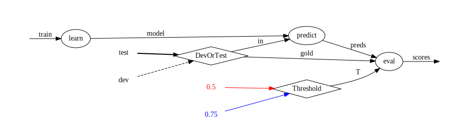

ducttape: A Crash Course « 1. Simple Workflows: Tasks and Dependencies
Recall the pipeline workflow from the previous section:
The final task, eval, has a hardcoded threshold parameter T. But suppose we want to run the evaluation multiple times with different values for T. Duplicating the task to change only the value of T is undesirable, especially if many values need to be tested. Including a loop within the body of the task would put the onus on the user to keep track of many different outputs, while hiding the fact that the two variants can be run in parallel.
The best solution is a HyperWorkflow, a workflow that specifies dimensions of variation in one or more tasks, implying multiple paths that can be taken to reach the end of the workflow. Each possible decision is called a branch. For instance, with T allowed to be 0.5 or 0.75 our graph becomes:
Now the eval task has two variants, known in ducttape parlance as realizations, arrived at via the different branches of T. In this case the variants share the same file inputs but produce different outputs.
In the above graph, learn and predict have only one realization each. But perhaps we want to run the second and third tasks on a development dataset as well as the test set, using the dev set to choose T and the test set to gauge final performance. Again, introducing near-copies of the predict and eval tasks would be cumbersome. Instead we introduce a second branch point, or bifurcation in the graph:
This leaves 1 realization for the learn task, 2 for predict, and 4 for eval. A more compact depiction represents each branch point with a diamond node:

From a branch point graph, the number of realizations of a given task can be calculated by taking the product of the in-degrees of all branch points that are ancestors of that task. (Note that even if eval did not depend directly on the DevOrTest branch point, it would still depend on it indirectly through the output of predict.)
The two branch points described above are defined as follows:
global {
# 1st branch point: DevOrTest
evaldata=(DevOrTest: test dev)
}
task learn < in=train > model {
../../learner $in > $model
}
task predict < in=$evaldata model=$model@learn > preds {
../../predictor $model < $in > $preds
}
# 2nd branch point: Threshold
task eval < gold=$evaldata preds=@predict > scores :: T=(Threshold: 0.5 0.75) {
cut -f2 $gold > temp
paste temp $preds > gold_and_pred
rm temp
../../evaluator $T gold_and_pred > $scores
}
Each branch point is simply added on the right-hand side of a variable. T=(Threshold: 0.5 0.75) indicates that the second branch point, called Threshold, determines the value of the T parameter. The two branches are called 0.5 and 0.75, respectively, and assign those values for T.1
A single branch point can be used by multiple tasks/variables of the workflow: DevOrTest is shared by predict and eval via a global variable.2
When running a realization (task variant), ducttape creates a directory under the task directory. The realization name consists of each branch point (not variable) name coupled with its branch name (not value, if they differ). For example, files for the realization of eval in which T=0.75 and gold=dev would go in the directory eval/DevOrTest.dev+Threshold.0.75.
The realization consisting of the first branch of every branch point affecting the task is called the Baseline realization. The directory name for this realization is always Baseline.baseline. Other realizations are named in terms of their deviation from the baseline. This is to make it easy to add a new branch point—possibly by factoring out part of the task into a new variable!—without invalidating or obscuring the results obtained so far, so long as the existing configuration is maintained in the first branch of the new branch point.
The six realizations in our example would be named as follows:
learn would go in learn/Baseline.baselinepredict(in=test) would go in predict/Baseline.baselinepredict(in=dev) would go in predict/DevOrTest.deveval(gold=test, T=0.5) would go in eval/Baseline.baselineeval(gold=test, T=0.75) would go in eval/Threshold.0.75eval(gold=dev, T=0.5) would go in eval/DevOrTest.deveval(gold=dev, T=0.75) would go in eval/DevOrTest.dev+Threshold.0.75The third, fifth, and sixth of these are known as one-off realizations because they differ from the Baseline in only one way.
If the workflow is executed and new branches are later added to the workflow, it is important not to change the first branch of any branch point, because that is known in existing results only as being part of the Baseline!
Executing a HyperWorkflow entails making branching decisions. One option is to execute all possible combinations—the full cross-product of branch points' branches, encompassing all realizations of all tasks—though as the branching complexity of the workflow grows, this quickly becomes intractable. Ducttape therefore allows the workflow designer to specify plans targeting specific execution paths. These can go in the .tape file alongside the workflow itself. For example:
plan CrossProduct { reach eval via (DevOrTest: *) * (Threshold: *) } plan Tuning { reach eval via (DevOrTest: dev) * (Threshold: *) } plan LearnOnly { reach learn }
Any of these plans can be selected when invoking the ducttape executable with the -p flag. The first indicates that all paths leading to the eval task should be explored.3
The second fixes the dev set as the prediction/evaluation dataset for parameter tuning; a new plan can be added and run later for the test set. The third plan is to run the learn task, then stop. (The subsequent steps could be run later.)
If no plans are defined for the workflow, ducttape will explore all Baseline and one-off realizations.
If plans are defined, but the -p flag is not provided, ducttape will explore the union of all the plans' realizations.
Having defined three plans with our workflow, in a fresh directory with only the .tape file and the required inputs/executables, we first invoke the LearnOnly plan:
Then the Tuning plan, which takes advantage of the output from the first:
And finally, CrossProduct, which ensures all realizations are covered—3 of which remain:
And that's the ballgame!
Variables in a task header may be defined with multiple alternative values. This means the task has multiple variants, called realizations. There are then multiple ways to execute a workflow, following paths in the realization graph. A path corresponds to a choice of a branch for each branch point associated with one or more tasks on the path. The Baseline realization of each task follows the first branch of every associated branch point. Other realizations are desribed by their deviation from the Baseline, which gives the workflow designer flexibility to add complexity to the workflow after running it.
Executing the full cross product of realizations is often impractical. Plan definitions describe sets of realization paths and can be selected individually for execution with the -p flag. If no plans are defined, ducttape defaults to executing all Baselines as well as one-off realizations deviating from the Baseline in only one branch. Once a realization for a task has been executed successfully, it will be considered complete for the current plan as well as any overlapping plan that is run at a later time.
This concludes our discussion of the fundamentals of ducttape workflows. The remaining sections contain additional features, examples, and tips. They are intended to be self-contained, so feel free to skip ahead to the sections that are most relevant to you.
The mapping from branch names to values can be specific to the variable being assigned. T=(Threshold: a=0.5 b=0.75) would mean the branch called a assigns the value 0.5 to T in this task, and likewise for branch b and value 0.75. (TODO: what if two branches have the same value for a variable? does the task get run twice with the same value?)↩
When a branch point occurs in multiple places, the branch names must be consistent but their values can differ. E.g., a task in the above workflow could specify an additional input absolute_path=(DevOrTest: test=/path/to/test dev=/path/to/dev)↩
The beginning of a plan expression is a comma-separated list of tasks to be reached. Any dependencies of these tasks are implicit; in this case eval is equivalent to eval, predict, learn. The wildcard * after a branch point name is equivalent to listing all of its branches. A single plan may contain multiple plan expressions, on separate lines.↩